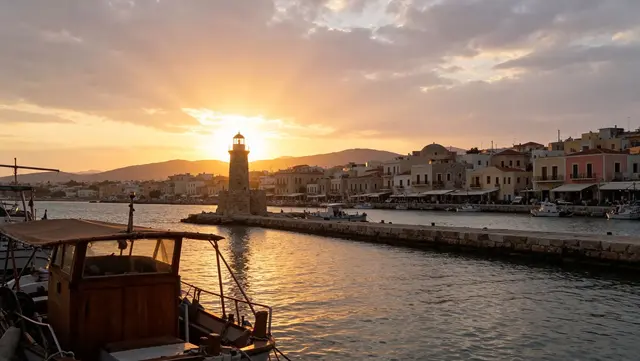
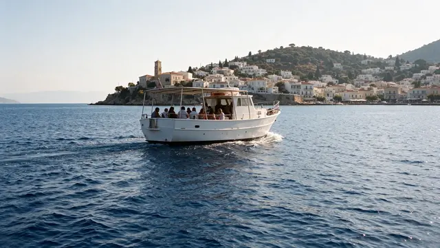

Οικονομία
Νέο πλαίσιο για τα ενοίκια: τι αλλάζει από τον Ιανουάριο για ιδιοκτήτες και ενοικιαστές
Οι βασικές αλλαγές, οι προθεσμίες και ποιους αφορούν — εξηγημένα απλά, βήμα βήμα.
πριν από 8′ · 6′
Καιρός · Αθήνα
17° / 11°
- Παρ18°
- Σάβ19°
- Κυρ16°
- Δευ13°
Τάσεις τώρα
- Η πόλη τη νύχτα: πώς άλλαξε η ζωή στο κέντρο μετά τις 11
- Φοιτητικές εστίες: ουρές για ένα δωμάτιο και ενοίκια που «τρέχουν»
- Πτήσεις: τι αλλάζει στις χειραποσκευές από το νέο έτος
- Τηλεργασία ή γραφείο; Τι προτιμούν τελικά οι εργαζόμενοι
- Νέα χειμερινά δρομολόγια για Ύδρα, Πόρο και Αίγινα

Ελλάδα
Πειραιάς: χειμερινή σεζόν κρουαζιέρας με περισσότερες αφίξεις από ποτέ
πριν από 21′ · 4′

Τεχνολογία
Ψηφιακές υπηρεσίες: πώς οι μεγαλύτεροι μαθαίνουν να τις χρησιμοποιούν
πριν από 6 ώρες · 5′
Διαφήμιση300 × 250θέση για Google AdSense ή απευθείας διαφημιστή

Αθήνα
Βραδιά στην Ακρόπολη: ειδικό ωράριο για το κοινό
χθες · 3′

Περιφέρεια
Ρέθυμνο: το παλιό λιμάνι αλλάζει όψη με νέα πεζοδρόμηση
πριν από 3 ώρες · 4′
Αθλητισμός
Τρίτη σερί νίκη στην Ευρώπη με εντυπωσιακό τελευταίο δεκάλεπτο
88 – 81Τελικό
Περισσότερα
όλη η ροή →
Τουρισμός
Μετέωρα: ο χειμώνας φέρνει νέο κύμα επισκεπτών

Ελλάδα
Νέα χειμερινά δρομολόγια για Ύδρα, Πόρο και Αίγινα

Καιρός
Ήπιος καιρός το Σαββατοκύριακο, βροχές από τη Δευτέρα στα δυτικά

Περιφέρεια
Ναύπλιο: ανοίγει ξανά για το κοινό το μονοπάτι προς το κάστρο

Οικονομία
Κατασκευές: πού χτίζονται τα περισσότερα νέα διαμερίσματα

Γεύση
Το παστίτσιο της Κυριακής: η συνταγή που περνά από γενιά σε γενιά

Lifestyle
Κατοικίδια και κρύο: τι χρειάζεται η γάτα σας τον χειμώνα

Οικονομία
Μεταφορές προς τα νησιά: γιατί ανεβαίνει το κόστος
Διαφήμιση970 × 250θέση για Google AdSense ή απευθείας διαφημιστή

Πολιτισμός
Οι παραστάσεις του χειμώνα που αξίζει να κλείσετε από τώρα
Από την αρχαία τραγωδία ως τη νέα ελληνική δραματουργία.
πριν από 1 ώρα · 7′

Τουρισμός
Κεφαλονιά: ο χειμερινός τουρισμός κερδίζει έδαφος
Ξενοδοχεία που μένουν ανοιχτά όλο τον χρόνο και τι δείχνουν οι κρατήσεις.
χθες · 4′
Newsletter